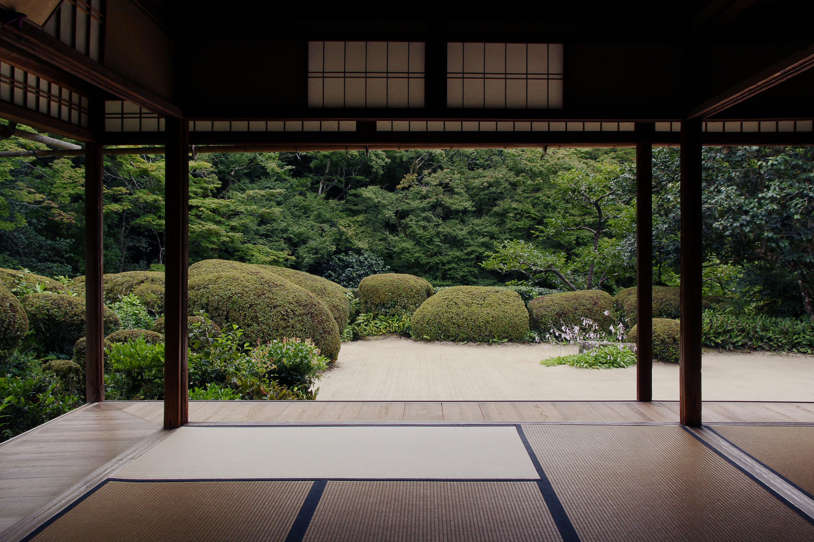
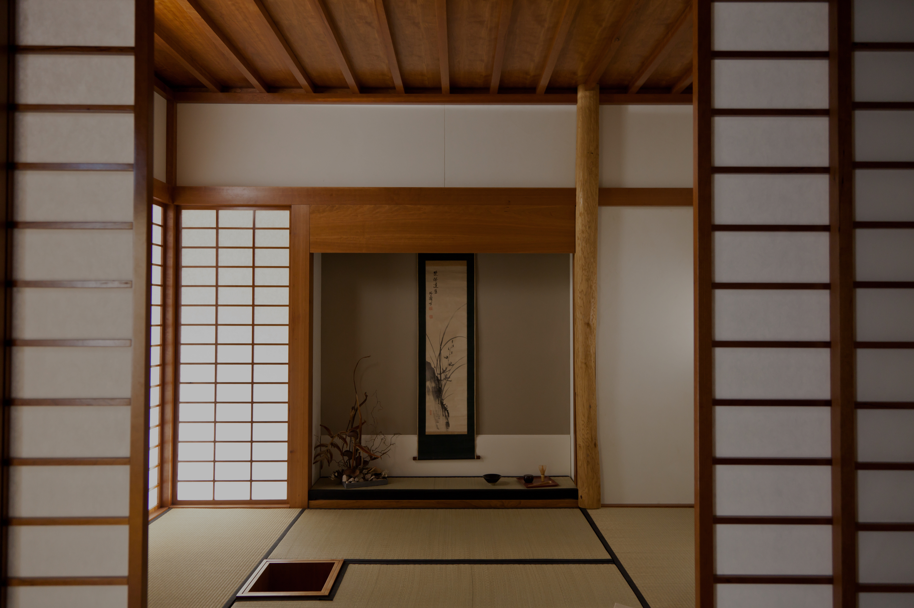
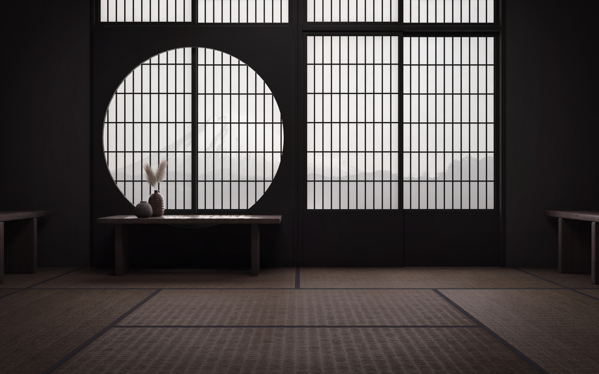

Backyard
In Praise of Shadows - Jun'ichiro Tanizaki

Jun’ichiro Tanizaki was a Japanese author who wrote about Japanese aesthetics while traditions were gradually withering away by the influences from “West”. His writing has very subtle but profound observations of the subject, like the story on this website, “陰翳礼讃[In Praise of Shadow]”. By contrast, some of his writing was very erotic and obsessive, like “細雪[The Makioka Sisters]”. His depiction of a physical subject, whether it is sexual or not, was never superficial, rather he talked about the intangible aesthetic of the physicality.
 